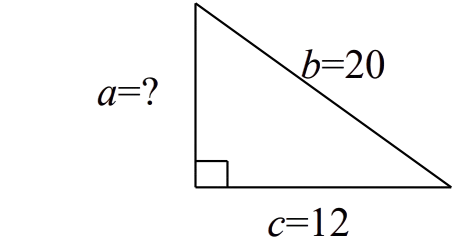

60:00
| What is the result of \( 0.84 + 2.2 + 56.007 \) ? | ما ناتج \( 0.84 + 2.2 + 56.007 \) ؟ |
| A | \( 59.111 \) | A |
| B | \( 58.047 \) | B |
| C | \( 59.047 \) | C |
| D | \( 58.807 \) | D |
| Find the average of the following five numbers : \( 96,\, 82,\, 90,\, 82,\, 85 \) | احسب متوسط الأعداد التالية : \( 96,\, 82,\, 90,\, 82,\, 85 \) |
| A | \( 85 \) | A |
| B | \( 82 \) | B |
| C | \( 87 \) | C |
| D | \( 90 \) | D |
| Solve the equation \( \log_{2}(5x - 1) = 2 \) for the set of real numbers. | ما حل المعادلة \( \log_{2}(5x - 1) = 2 \) ضمن مجموعة الأعداد الحقيقية ؟ |
| A | \( x = 1 \) | A |
| B | \( x = 2 \) | B |
| C | \( x = 4 \) | C |
| D | \( x = 3 \) | D |
| \(7 \dfrac{1}{2} \div 5 \dfrac{5}{9} = ?\) | ما ناتج العملية التالية: \( 7 \dfrac{1}{2} \div 5 \dfrac{5}{9} \) ؟ |
| A | \( \dfrac{100}{135} \) | A |
| B | \( 1 \dfrac{7}{20} \) | B |
| C | \( \dfrac{20}{27} \) | C |
| D | \( 41 \dfrac{2}{3} \) | D |
| A car travels \(438.4\) miles on a full tank of fuel. How far (in miles) does the car travel with one gallon of fuel if the tank capacity is \(16\) gallons? | تقطع سيارة مسافة \(438.4\) ميلاً عندما يكون خزان الوقود ممتلئًا تمامًا. ما المسافة (بالميل) التي تقطعها السيارة بمقدار جالون واحد من الوقود إذا كانت سعة الخزان \(16\) جالونًا؟ |
| A | \(701.44\) | A |
| B | \(27.4\) | B |
| C | \(74.2\) | C |
| D | \(7014.4\) | D |
| Convert \( 55^\circ C \) from Celsius to Fahrenheit using the formula \( F = \frac{9}{5}(C + 32) \) | حوِّل \( 55^\circ C \) من مقياس سيلزيوس إلى فهرنهايت باستخدام العلاقة \( F = \frac{9}{5}(C + 32) \) |
| A | \( 131^\circ F \) | A |
| B | \( 387^\circ F \) | B |
| C | \( 105.4^\circ F \) | C |
| D | \(156.6^\circ F \) | D |
| Find \(a\) in the triangle below. (Note: Figure is not drawn to scale.) |
ما قيمة \(a\) في المثلث الموضح أدناه؟ (ملاحظة: الشكل غير مطابق لمقياس الرسم) |

| A | \(12\) | A |
| B | \(8\) | B |
| C | \(16\) | C |
| D | \(14\) | D |